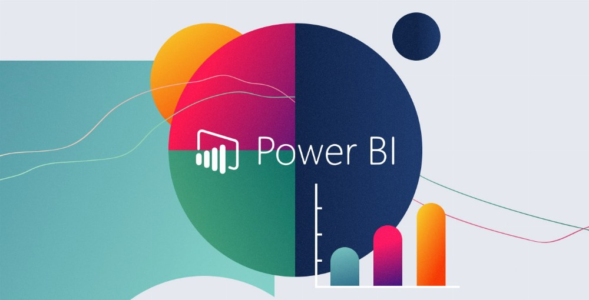

A Data-Driven Approach to Defining Risk-Adjusted Coding Specificity Metrics for a Large U.S.
Dementia Patient Cohort.
Medical coding impacts patient care quality, payor reimbursement, and system reliability through
the precision of patient information documentation. This study presents a data-driven approach
to define risk-adjusted coding specificity metrics using a large dataset of U.S. dementia
patient records. The aim is to provide a novel risk-adjusted metric to estimate dementia ICD-10
coding specificity by facility upon adjusting for commonly available facility- and patient-level
characteristics.

North Carolina Latino Community Strengths and Needs Assessment Project is a comprehensive study
aimed at understanding the strengths, challenges, and needs of the Latino community in the
region. This project involved extensive data collection, analysis, and visualization to provide
insights that can inform policy-making, resource allocation, and community support initiatives.

AtliQ Hardware has grown significantly in recent years, expanding globally. The company sells
computers and accessories through three channels:
Retailers
Direct
Distributors
Recently, the company faced a significant loss by opening a store in America based on surveys,
intuition, and some Excel analysis. Meanwhile, competitors have robust analytics teams for
data-driven decisions. Hence, AtliQ Hardware decided to build its analytics team for better
insights and future decisions.

Developed an email automation system using Python, featuring the smtplib and email.mime libraries
to send emails efficiently. The system connects to an SMTP server, logs in using provided
credentials, and sends a formatted email with a subject and body to a specified recipient. This
project demonstrates proficiency in email protocol handling, secure server connection, and
automation of routine email tasks.

The Bank Loan Report project highlights the transformative power of data analytics in the banking
sector. By meticulously cleaning, analyzing, and visualizing loan data, I've developed a
comprehensive tool that provides critical insights into lending trends and portfolio health.
Utilizing SQL for robust data management and Tableau for dynamic visualizations, this project
empowers stakeholders to make informed, data-driven decisions.

This project involves a comprehensive process of data exploration, cleaning, transformation, and
analysis of AtliQ Hotels' data. Utilizing Python libraries such as Pandas, NumPy, and
Matplotlib, we uncover valuable insights to support strategic planning and operational
enhancements for AtliQ Hotels.

This project involves the analysis of a Coca-Cola retailer dataset. The dataset was cleaned and
analyzed using pivot tables in Excel, followed by the creation of an interactive dashboard to
visualize key metrics and trends.